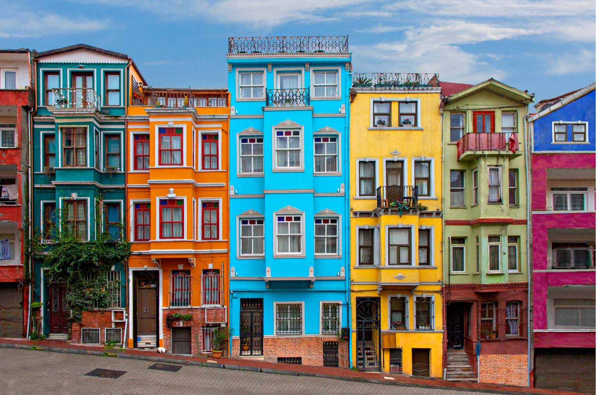

Destination overview: Istanbul
Key facts and planning essentials.

About Istanbul
Istanbul is Turkey’s largest city and one of the world’s most culturally significant destinations. It is known for historic architecture, lively streets, local food culture, and scenic waterfront views. Visitors often plan by neighbourhood to minimise travel time and avoid unnecessary back-tracking.
- Recommended seasons: Spring (Mar–May) and Autumn (Sep–Nov)
- Travel style: Culture, shopping, food, and scenic transport
- Visitor planning tip: Group activities by location (zones)
Getting around (visitor-friendly)
Metro and trams connect major areas efficiently, while ferries offer a calmer and more scenic option. For comfort, plan walking routes and include rest breaks in busy sightseeing days.
Culture and etiquette
In religious sites, respectful clothing and behaviour are expected. In busy markets and tourist areas, keep valuables secure and remain aware of surroundings.
Suggested zone-based plan
- Day 1: Historic Peninsula (Hagia Sophia, Blue Mosque, Topkapi area)
- Day 2: Beyoğlu / Galata (Istiklal Street + Galata Tower)
- Day 3: Bosphorus (ferry ride + scenic viewpoints)